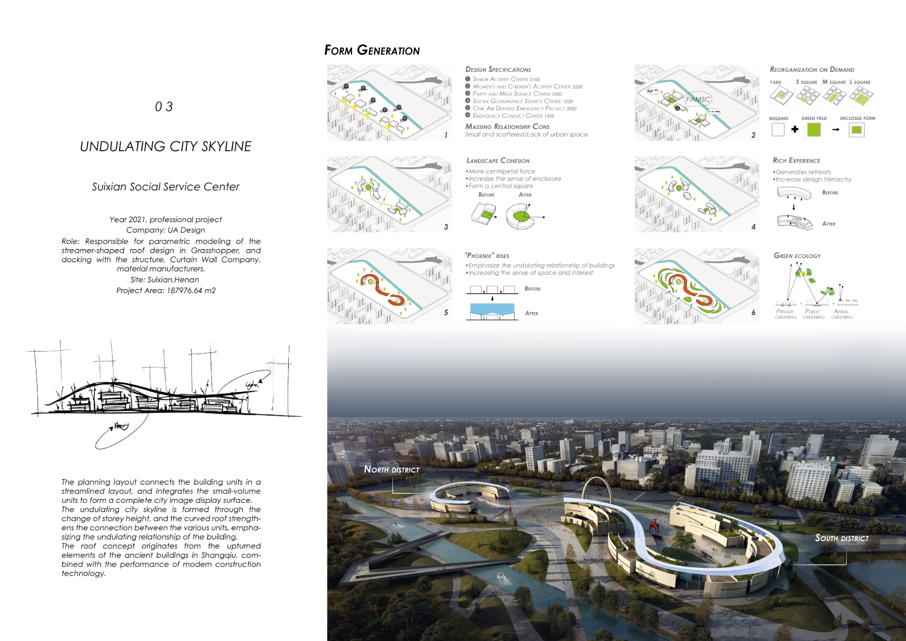

Education
MSc Architecture, Urbanism & Building Sciences (Building Technology)
TU Delft, NL · 09/2023 – 06/2025
GPA: 8.71/10 (Cum Laude)
Thesis: Closed‑Loop Control of Robotic 3D Clay Printing Using Machine Learning for Overhang Structure (9.5/10)
BArch & Environments
University of Sydney, AU · 03/2018 – 01/2021
GPA: 75.8/100 (Distinction)
Semester Exchange, BAAS
University of Hong Kong, HK · 02/2020 – 06/2020
GPA: Studio: A
Additional Education
ACM SIGSOFT Summer School for Software Engineering in Robotics
TU Delft, Netherlands · 07/2025
- Research: Building and Deploying Robotic Systems
- Autonomous systems for MIRTE Robots with ROS2
IDEA League Summer School — Analysis and Modelling Road‑User Behavior
Chalmers University of Technology, Gothenburg, Sweden · 08/2024
- Infrastructure‑based intersection warning system design
IDEA League Summer School — Closing the Loop: Design for Disassembly & Circular Economy
RWTH Aachen University, Aachen, Germany · 06/2024
- Circular and modular redesign for (dis)assembling Miele laundry machine
Architectural DigitalFUTURES 2023 — 13th Workshop: Co‑Intelligent Assemblies
Tongji University, Shanghai (hosted by Tsinghua University) · 06/2023
- Main project: Babel’s Babelism — interior lighting installation using imitation learning (Unity ML‑Agents)
Selected Publications
Conference
Closed-Loop Control of 3D Clay Printing Using Machine Learning
Ding, X., Așut, S., & Andriotis, C.
Digitalisation of the Built Environment: 4th 4TU/14UAS Research Day, pp. 93–99 (2025)
Conference (accepted)
Enhancing 3D Clay Printing with Computer Vision and Deep Learning
Așut, S., Ding, X., Guha, S., Ryu, S., & Wei, W.
eCAADe Annual Conference 2025, Ankara
Magazine
Biophilic Design in High-Rise Architecture (Multi-objective Optimization)
Ding, X.
Rumoer 87: 30th Anniversary Lustrum Special (2025), pp. 50–55
Journal
From Conceptual Design to Detailed Development of Steel Space Frame Roof under Low-Cost Conditions
Zhao, Z., & Ding, X.
Model World (2022) 23: 91–93
In preparation
Closed-Loop Control of Robotic 3D Clay Printing Using Machine Learning for Overhang Structure
Ding, X., Așut, S., & Andriotis, C.
Target: Automation in Construction (2025)
Projects
Responsive Fabrication System for Real-Time Detection and Correction in Clay 3D Printing
TU Delft · Graduation Project (11/2024 – 06/2025)
- Closed-loop ML control adjusting robotic arm speed for material flow and overhang integrity.
- Dataset across multiple speeds/inclinations; ResNet Attention‑56 & DINOv2 + Grad‑CAM.
- Integrated extruder, Raspberry Pi cameras, PC–robot comms; validated vs. open-loop.

Live-Detection Calibration for Automated G‑Code Adjustment in Clay 3D Printing
TU Delft · CORE Group (09/2024 – 11/2024)
- Real-time ML calibration workflow in Python with Attention‑56 parameter prediction.
- Dynamic parameter adjustment improved print consistency and quality.
Biophilic Informed Tool for Floor Plan Layout Generation
TU Delft · MEGA (04/2024 – 06/2024)
- Grasshopper-based multi-objective tool using 5 biophilic criteria (daylight/air/thermal/visual/social).
- Outputs quantifiable scores and spider charts to balance well-being and performance.
The Hollow — Discrete Design for Bird Hide (UR5 Assembly)
TU Delft · Design Informatics (02/2024 – 04/2024)
- Generative design + UR5 control; optimized toolpath, pickup method, station design, HRI.
Data‑Driven Plan Generation for Residential Buildings
TU Delft · CIID (02/2024 – 04/2024)
- CNN image‑to‑image for detailed layouts vs. diffusion for realistic samples; compared accuracy/efficiency.
Realize Hyperboloid Shell Roof Design in a Low‑Cost Condition
UA Design · Professional R&D (01/2022 – 04/2022)
- Parametric optimization of hyperboloid shell; panel flatness/standardization; materials comparison.


Rule‑Based Modular Design — Oral History Library (Cockatoo Island)
University of Sydney · UG Thesis (08/2020 – 11/2020)
- Enhanced WASP framework with secondary boundary constraints for customized discrete spaces.
Pedestrian Wind Comfort Parametric Tool
University of Sydney · Algorithmic Architecture (08/2019 – 09/2019)
- Grasshopper + Butterfly/OpenFOAM tool for pedestrian‑level microclimate analysis (1.5 m).

Design Project in Operation — Dormitory Building for Haimen Linglong Lake Road East Middle and Primary School
UA Design · Built Project (Designed 2021 · Completed 02/2023 · In operation since 09/2024)
- Location: Haimen, Nantong; construction land area: 61,167 m².
- Role: Responsible for the design of the whole dormitory building; coordinated with structure, material manufacturers, and façade.
Awards & Exhibitions
Awards
- Best Computational Design Award, MEGA (2024), TUD, sponsored by Packhunt
- Most Integrated Design Award, MEGA (2024), TUD, sponsored by Techniplan
Exhibitions
- MEGA “CAThWALK” Highrise Design Project, exhibited in Annual High-rise Congress 2024 (Utrecht, Netherlands) →
- CORE “Mudtracker 3D” project, exhibited in 2024 Robots in Business event in RoboHouse (Delft, Netherlands)